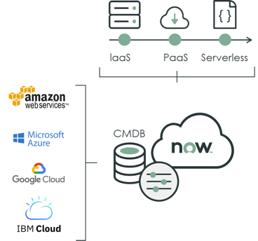

<div class="container">
    <div class="row">
        <div class="col-md-12" style="margin-top:50px;">
            <mat-tab-group dynamicHeight [selectedIndex]="routeId">
                <mat-tab>
                    <ng-template mat-tab-label>
                        <div class="custom">
                            <span class="mat-label">Professional Services</span>
                        </div>
                    </ng-template>
                    <div class="col-md-12 dhd-simp" style="margin-top:50px;">
                        <h1>We are here to help you deliver services that increase productivity and achieve new insights
                            by developing innovative <span>ITSM</span> solution. </h1>
                        <p>The IT Service Management (ITSM) solution enables you to modernize the way you manage and
                            deliver services to your users through a single cloud-based platform. Automate processes,
                            increase productivity across the enterprise, and gain data visibility and reporting, all
                            within one tool. </p>
                        <p>IT service management (ITSM) refers to the implementation and management of information
                            technology services. </p>
                        <p>DEV-HD IT Service Management solutions with ServiceNow allows you to customize or remodel the
                            processes, by finding solutions to automate recurrent activities and  enabling the IT
                            support organization quickly resolve or escalate issues and problems and provide higher
                            levels of business user satisfaction.</p>
                        <p>We bring our process expertise, ServiceNow experience and innovative solutions that are
                            effective and provide complete life cycle support for these core processes. </p>
                        <h1>INCLUDED IN THE <span>ITSM</span> SOLUTION </h1>
                        <ul>
                            <li>Incident Management </li>
                            <li>Problem Management </li>
                            <li>Change and Release Management </li>
                            <li>Request Management </li>
                            <li>Asset and Cost Management </li>
                            <li>Walk-Up Experience </li>
                            <li>Knowledge Management* </li>
                            <li>Configuration Management*</li>
                            <li>Reports and Dashboards* </li>
                            <li>Service Level Management* </li>
                            <li>Benchmarks*</li>
                            <li>Surveys and Assessments* </li>
                            <li>Virtual Agent</li>
                            <li>Agent Intelligence</li>
                            <li>Performance Analytics</li>
                            <li>Continual Improvement</li>
                        </ul>
                    </div>
                </mat-tab>
                <mat-tab>
                    <ng-template mat-tab-label>
                        <span class="mat-label">Managed Services & Support</span>
                    </ng-template>
                    <div class="col-md-12 dhd-simp" style="margin-top:50px;">
                        <h1>Eliminate Service Outages with <span>ServiceNow IT Operations Management</span></h1>
                        <p>Move IT operations from a reactive team to one that works intelligently for the business.
                            Gain visibility across infrastructure and apps, maintain service health, and optimize cloud
                            delivery and spend.
                            Deliver high-performance business services with visibility and AIOps. </p>
                        <p>ServiceNow® ITOM Enterprise delivers a comprehensive and integrated set of ITOM capabilities
                            that build seamlessly on your existing ServiceNow® IT Service Management (ITSM) investment.
                            ServiceNow® Discovery helps create a single system of record for IT infrastructure spanning
                            data centers and clouds. ServiceNow® Event Management reduces event floods from monitoring
                            tools and provides a single dashboard to proactively identify service issues.</p>
                        <p>Our experts will help you integrate ITOM with existing ITSM platform to gain visibility of
                            your end-to-end business services. You will benefit from the accelerated performance and
                            learn the relationship with your IT landscape. We are here to help you know your service
                            health by setting up self-service capabilities to engage in a multi-cloud strategy. </p>
                        <p>We bring our process expertise, ServiceNow experience and innovative solutions that are
                            effective and provide complete life cycle support for these core processes. </p>
                        
                    </div>
                </mat-tab>
            </mat-tab-group>
        </div>
    </div>
</div>